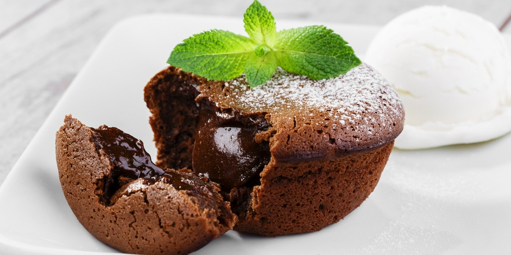

Creating these moist dark chocolate puddings with a gooey melting centre is easier than it looks. Follow these quantities and timings, and you'll see impressive results.

- 90g softened unsalted butter, plus a little extra for greasing the rings
- 90g dark chocolate (70% cocoa solids), finely chopped
- 2 medium eggs
- 2 medium egg yolks
- 120g caster sugar
- 45g plain flour, sieved
1. Pre-heat the oven to 180°C/gas mark 4
2. Butter the inside of the metal rings, and line each one with non-stick baking parchment to come just above the top. Stand them on a parchment-lined baking tray
3. Melt the chocolate very gently in a bowl over a pan of hot water. Add the butter and stir until thoroughly mixed
4. In a separate bowl, whisk the eggs, egg yolks and sugar until evenly combined. Mix in the melted chocolate, and gently fold in the flour. Chill in the fridge for 20 minutes
5. Spoon the mixture into the parchment-lined rings, until they are about two thirds full. Chill them in the fridge for at least an hour (they will keep for up to 6 hours)
6. To bake the fondants, place the tray in the centre of the oven and cook for 10 minutes. Let them rest for 2 minutes before carefully lifting away the metal rings and parchment. Transfer them to small serving plates and serve with vanilla ice cream
If you are still not sure how to cook this dessert please check the video below:
The original recipe of the chocolate fondant you can find here
Music: http://www.bensound.com